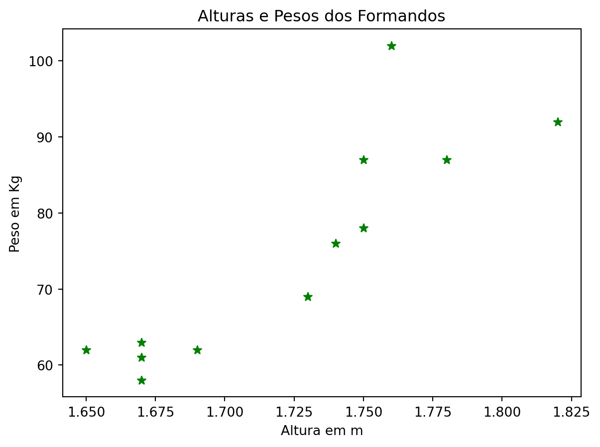
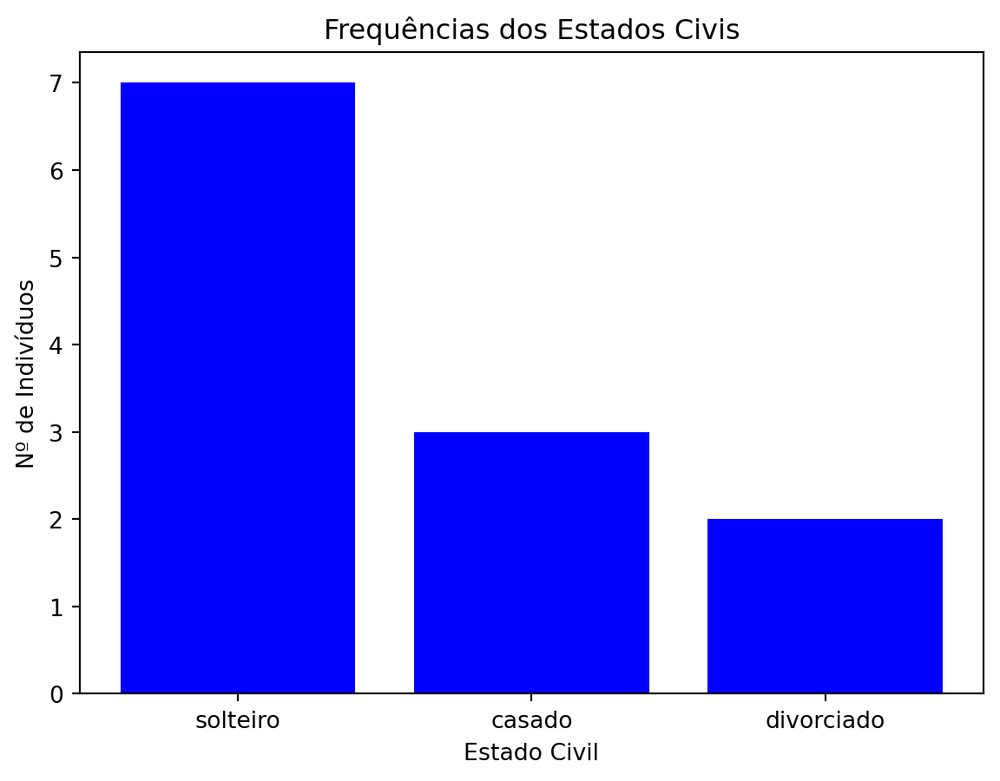
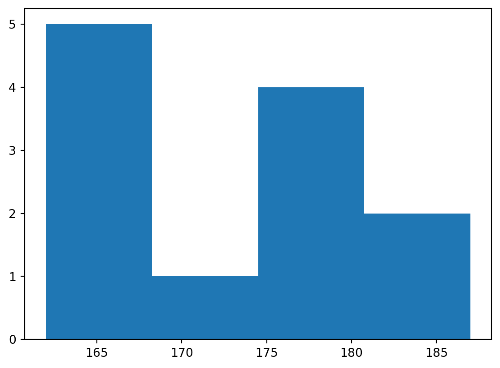
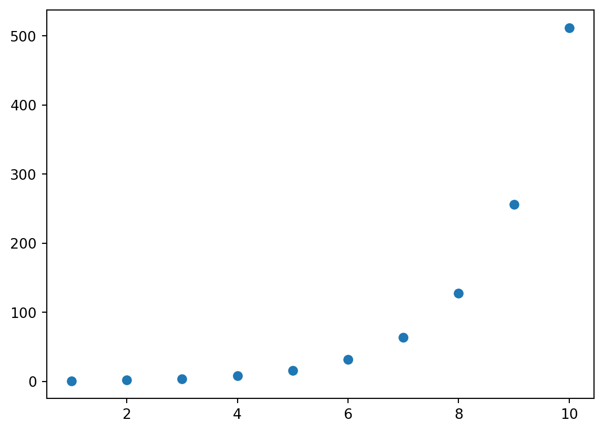
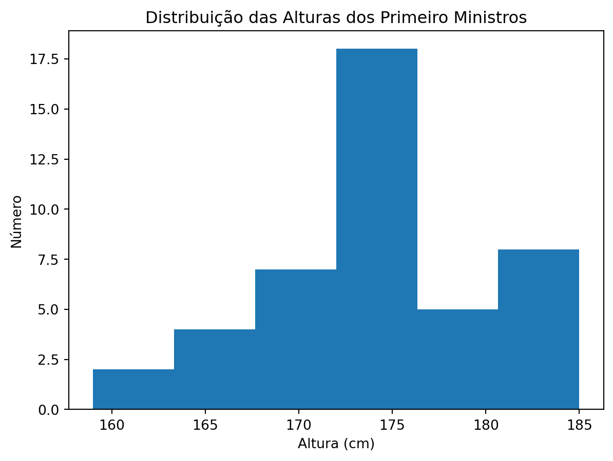
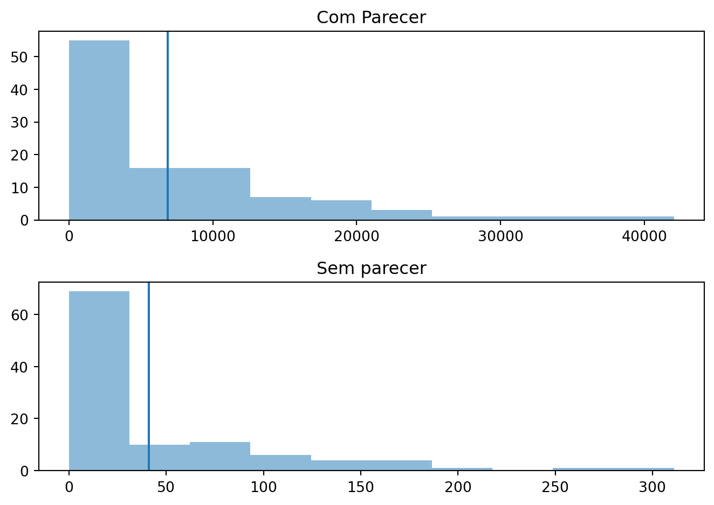
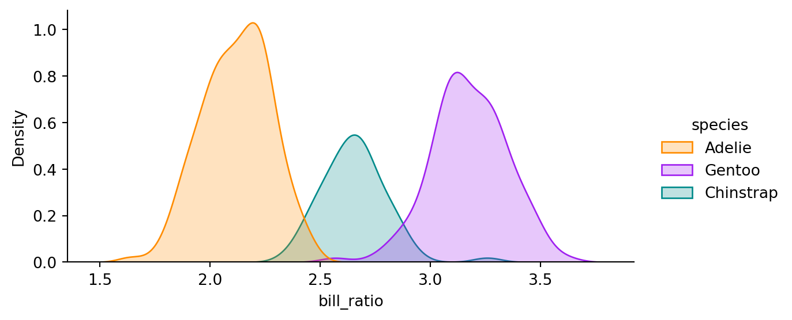

# Creating integer variables
x = 10
y = -5
z = 02 Data Science (Basics)
Conteúdos
Estatísticas básicas em Python.
Apresentação dos packages NumPy e Pandas.
Familiarização com os aspectos fundamentais de bases de dados relacionais e o modelo relacional de gestão.
Conexões às bases de dados e interações através de consultas básicas de SQL.
2.1 Estatística Descritiva e Inferência
\[D = \{(\vec{x}_1, y_1), ..., (\vec{x}_n, y_n)\} \]
\((\vec{x}, y) \thicksim P\)
tipos de dados numericos: int, float
type(x)int# Creating float variables
a = 3.14
b = -0.5
c = 2.0
# Using the variables
(a + b) * c5.28tipo sequencia: list, tuple, range, numpy.array
# Creating a list of integers
my_list = [1, 2, 3, 4, 5]
# Creating a list of strings
names = ['Alice', 'Bob', 'Charlie']
# Creating a mixed-type list
mixed_list = [1, 'hello', 3.14, True]# Checking my_list
my_list[1, 2, 3, 4, 5]os elementos das listas são indexados
# Accessing elements in the list my_list
my_list = [1, 2, 3, 4, 5]
# Accessing the first element (index 0)
first_element = my_list[0]
print(first_element)
# Accessing the third element (index 2)
third_element = my_list[2]
print(third_element)
# Accessing the last element
last_element = my_list[-1]
print(last_element)
# Accessing the second-to-last element
second_to_last_element = my_list[-2]
print(second_to_last_element) 1
3
5
4num intervalo incluimos o primeiro index mas não o último
# Slicing to get a subset of elements
subset = my_list[1:4]
print(subset) [2, 3, 4]o operador * permite repetir a lista
# Using list repetition
my_list * 2
my_list + my_list[1, 2, 3, 4, 5, 1, 2, 3, 4, 5]para multiplicar cada elemento da lista:
# Multiply every element of my_list by 2
result = [x * 2 for x in my_list]
print(result) [2, 4, 6, 8, 10]A função lambda em Python é uma função anónima:
my_list = [1, 2, 3, 4, 5]
result = list(map(lambda x: x * 2, my_list))
print(result) [2, 4, 6, 8, 10]para alterar a lista original temos de fazer um ciclo
# Update each element in the list by multiplying it by 2
for i in range(len(my_list)):
my_list[i] *= 2
print(my_list) [2, 4, 6, 8, 10]ordenação
# Sort my_list in descending order
my_list.sort(reverse=True)
print(my_list) [10, 8, 6, 4, 2]concatenar as listas usando o método extend
my_list = [1, 2, 3]
another_list = [4, 5, 6]
# Concatenate another_list to my_list using the + operator
my_list += another_list
# Concatenate another_list to my_list using the extend() method
my_list.extend(another_list)
print(my_list) [1, 2, 3, 4, 5, 6, 4, 5, 6]ou com append
# Append each element from another_list to my_list using the append() method
for element in another_list:
my_list.append(element)
print(my_list) [1, 2, 3, 4, 5, 6, 4, 5, 6, 4, 5, 6]eliminar elementos da lista por index
my_list = [1, 2, 3, 4, 5]
# Remove the element at index 2 (which is 3) from my_list
del my_list[2]
print(my_list) [1, 2, 4, 5]Os tuplos são normalmente usados em vez de listas quando pretendemos que sejam imutáveis, por exemplo coordenadas, configurações, chaves de um dicionário…
# Creating a tuple
my_tuple = (1, 2, 3, 4, 5)
print(my_tuple)
coordinates = {(0, 0): 'origin', (1, 1): 'diagonal'}
coordinates(1, 2, 3, 4, 5){(0, 0): 'origin', (1, 1): 'diagonal'}As funções podem retornar múltiplos valores na forma de tuplo, permitindo um código conciso e eficiente. A descompactação de tuplos (tuple unpacking) é frequentemente usada para extrair os valores.
# Tuple unpacking
def get_coordinates():
return 10, 20
x, y = get_coordinates()
print("x:", x)
print("y:", y)x: 10
y: 20ranges
# Create a range of eggs
eggs = range(10)
eggsrange(0, 10)# print all the elements in the range
for egg in eggs:
print(egg, end=" ")
print()
type(eggs)
len(eggs)
sum(eggs)0 1 2 3 4 5 6 7 8 9 45tipo texto (strings): str
tipo booleano: bool
def is_even(number):
"""
Check if the given number is even.
"""
return number % 2 == 0
# Test the function
print(is_even(4))
print(is_even(7))
num = 18
if is_even(num):
print(f"{num} is even.")
else:
print(f"{num} is odd.")True
False
18 is even.tipo categorico: pandas.Categorical
dados temporais: datetime, panda.Series, pandas.DataFrame
distribuições estatisticas: scipy.stats
Arrays: numpy.array
2.1.1 Dados quantitativos
alturas = [1.65,1.73,1.78,1.67,1.82,1.76,1.75,1.74,1.75,1.67,1.67,1.69]
len(alturas)
type(alturas)
alturas.sort(reverse=True)
media_alturas = sum(alturas)/len(alturas)
media_alturas1.7233333333333334representação gráfica com um scatterplot
pesos = [92, 87, 102, 78, 87, 76, 69, 62, 63, 58, 61, 62]
# importing the required module
import matplotlib.pyplot as plt
# x axis values
x = alturas
# corresponding y axis values
y = pesos
# plotting points as a scatter plot
# s - point size, alpha - opacity
plt.scatter(x, y, color= "green", marker= "*", s=40)
# naming the x axis
plt.xlabel('Altura em m')
# naming the y axis
plt.ylabel('Peso em Kg')
# giving a title to my graph
plt.title('Alturas e Pesos dos Formandos')
# function to show the plot
plt.show()
?plt.scatter
2.1.2 Dados quantitativos
estado_civil = ["solteiro", "casado", "solteiro", "divorciado", "solteiro", "solteiro",
"casado", "solteiro", "casado", "solteiro", "divorciado", "solteiro"]
solteiro_count = estado_civil.count("solteiro")
casado_count = estado_civil.count("casado")
divorciado_count = estado_civil.count("divorciado")
divorciado_count2representação gráfica (barras)
# heights of bars
height = [solteiro_count, casado_count, divorciado_count]
# labels for bars
tick_label = ['solteiro', 'casado', 'divorciado']
# plotting a bar chart
plt.bar(tick_label, height, width = 0.8, color = 'blue')
# naming the x-axis
plt.xlabel('Estado Civil')
# naming the y-axis
plt.ylabel('Nº de Indivíduos')
# plot title
plt.title('Frequências dos Estados Civis')
# function to show the plot
plt.show()
A partir de um dicionário
alturas_dict = { "Teresa": 165, "Maria": 169, "Joao": 178, "Carlos": 187,
"Vasco": 182, "Joana": 162, "Sofia": 165, "Pedro": 177,
"Afonso": 175, "Miguel": 177, "Ana": 163, "Margarida": 162}
# converter para uma lista para depois fazerf o gráfico
alturas_list = list(alturas_dict.values())
alturas_list[165, 169, 178, 187, 182, 162, 165, 177, 175, 177, 163, 162]agora um histograma
plt.hist(alturas_list, 4)
plt.show()
estatisticas
# Calcula a média usando a fórmula
n = len(alturas_list)
med_alturas_list= sum(alturas_list)/n
print("Median: {0}".format(med_alturas_list))Median: 171.83333333333334# Calcula a soma dos desvios quadrados
ss_alturas_list = sum((x - med_alturas_list)**2 for x in alturas_list)
print(ss_alturas_list)807.6666666666666# Variância amostral corrigida (da população) com ddof = 0
# Variância amostral não corrigida com ddof = 1
ddof = 0
var_alturas_list = ss_alturas_list/(n-ddof)
print(var_alturas_list)
# Desvio Padrão (corrigido - para alterar voltar ao passo anterior da variância)
dp_alturas_list = var_alturas_list**0.5
print(dp_alturas_list)67.30555555555556
8.203996316159312usando uma pckage
import statistics as st
print("The mean is:", st.mean(alturas_list))
print("The mode is:", st.mode(alturas_list))
print("The median is:", st.median(alturas_list))
print("The sample variance is:", st.variance(alturas_list))
print("The population variance is:",st.pvariance(alturas_list))
print("The sample standard deviation is:",st.stdev(alturas_list))
print("The population standard deviation is:",st.pstdev(alturas_list))
print("The median is:", st.median(alturas_list))
# N = 4 devolve os 3 quartis superiores - percentis 25 e 75
print("The first three quartiles are:", st.quantiles(alturas_list, n = 4))
print("The median is:", st.median(alturas_list))
# N = 10 devolve - percentil 10, 20, ... , 90
print("The percentiles are:", st.quantiles(alturas_list, n = 10))The mean is: 171.83333333333334
The mode is: 165
The median is: 172.0
The sample variance is: 73.42424242424242
The population variance is: 67.30555555555556
The sample standard deviation is: 8.568794689117158
The population standard deviation is: 8.203996316159312
The median is: 172.0
The first three quartiles are: [163.5, 172.0, 177.75]
The median is: 172.0
The percentiles are: [162.0, 162.6, 164.8, 165.8, 172.0, 176.6, 177.1, 179.6, 185.5]2.1.3 Numpy
import numpy as npo vector (array) é o objecto principal no NumPy
criar array a partir de lista
alturas_list
array = np.array(alturas_list)
arrayarray([165, 169, 178, 187, 182, 162, 165, 177, 175, 177, 163, 162])Os elementos dos array têm de ser todos do mesmo tipo.
array 2D e 3D
array_2D = np.array([[1, 2, 3], [4, 5, 6], [7, 8, 9]])
array_2D
int_list = [[[1,2,4,4,5], [5,7,7,9,3], [3,2,5,3,6], [6,8,9,5,1]],
[[8,9,3,4,3], [4,6,4,3,3], [2,6,3,6,6], [8,5,7,2,1]],
[[1,2,7,9,5], [4,8,7,7,3], [8,5,7,6,7], [2,4,4,5,4]]]
array_3D = np.array(int_list)
array_3Darray([[[1, 2, 4, 4, 5],
[5, 7, 7, 9, 3],
[3, 2, 5, 3, 6],
[6, 8, 9, 5, 1]],
[[8, 9, 3, 4, 3],
[4, 6, 4, 3, 3],
[2, 6, 3, 6, 6],
[8, 5, 7, 2, 1]],
[[1, 2, 7, 9, 5],
[4, 8, 7, 7, 3],
[8, 5, 7, 6, 7],
[2, 4, 4, 5, 4]]])Criar um array a partir do zero
# Criar um array de inteiros de tamanho 10 (length-10) preenchido a zeros
np.zeros(10, dtype=int)
# Criar um array de 3x5 (3 linhas e 5 colunas) com dados do tipo floating-point preenchido a 1s
np.ones((3, 5), dtype=float)
# criar arrau 3D
np.ones((2, 4,6), dtype=float)
# Criar um array de 3x5 (3 linhas e 5 colunas) com 3.14
np.full((3, 5), 3.14)
# Criar um array de -3 a 4 com espaçamento igual entre os seus elementos
# atenção que o valor inicial está incluido mas o de stop não
np.arange(-3,4)
# Criar um array preenchido com uma sequência de 0 até 20 saltando de 2 em 2
# quando se passa um terceiro argumento é interpretado como o espaçamento
np.arange(0, 20, 2)
# Criar um array de 5 valores igualmente espaçados entre 0 e 1
np.linspace(0, 1, 5)array([0. , 0.25, 0.5 , 0.75, 1. ])os array são iteráveis
todos os iteradores são iteráveis (o contrário não é válido)
class SquaresIterator:
def __init__(self, n):
self.n = n
self.current = 0
def __iter__(self):
return self
def __next__(self):
if self.current >= self.n:
raise StopIteration
result = self.current ** 2
self.current += 1
return result
# Criar o iterador
iterator = SquaresIterator(5)
# Usar o iterador para mostrar os valores
while True:
try:
num = next(iterator)
print(num)
except StopIteration:
break0
1
4
9
16função gerador
# Definir o gerador
def squares(n):
current = 0
while current < n:
yield current ** 2
current += 1
# Criar o iterador
squares_generator = squares(5)
# Usar o iterador para imprimir os valores
for num in squares_generator:
print(num)0
1
4
9
16fazer um contador regressivo
# Definir o gerador
def countdown(n):
while n >= 0:
yield n
n -= 1
# Criar o iterador instanciado com o valor 3
countdown_generator = countdown(3)
# Usar o iterador para imprimir os valores
for minutos in countdown_generator:
print(minutos)3
2
1
0criar amostras pseudo/aleatorias>
# Criar um array de 3x5 de valores aleatórios entre 0 e 1
# a partir de uma distribuição uniforme contínua.
# cada número gerado tem a mesma probabilidade de ocorrer dentro do intervalo
np.random.random((3, 5))
# Criar um array de 3x3 de números aleatórios com uma distribuição normal
# com média 0 e desvio padrão 1
np.random.normal(0, 1, (3, 3))
# Criar um array de 3x3 de números aleatórios no intervalo de [0, 10[
# notem que 0 pertece ao intervalo mas 10 não...
np.random.randint(0, 10, (3, 3))array([[5, 3, 0],
[7, 6, 9],
[4, 9, 4]])definir semente
# Define a semente
np.random.seed(42)
# Gera uma matriz 3x3 de números aleatórios duma distribuição normal
normal_array = np.random.normal(loc=0, scale=1, size=(3, 3))
print(normal_array)
# Criar uma matriz identidade de 5x5
np.eye(5)[[ 0.49671415 -0.1382643 0.64768854]
[ 1.52302986 -0.23415337 -0.23413696]
[ 1.57921282 0.76743473 -0.46947439]]array([[1., 0., 0., 0., 0.],
[0., 1., 0., 0., 0.],
[0., 0., 1., 0., 0.],
[0., 0., 0., 1., 0.],
[0., 0., 0., 0., 1.]])exercicios
# Proposta de Exercicio
# Converta a lista de sudoku num array e mostre no écran o tipo da nova variável
# sudoku_array para demonstrar que o código funcionou correctamente
sudoku_list = [
[0, 0, 4, 3, 0, 0, 2, 0, 9], [0, 0, 5, 0, 0, 9, 0, 0, 1], [0, 7, 0, 0, 6, 0, 0, 4, 3],
[0, 0, 6, 0, 0, 2, 0, 8, 7], [1, 9, 0, 0, 0, 7, 4, 0, 0], [0, 5, 0, 0, 8, 3, 0, 0, 0],
[6, 0, 0, 0, 0, 0, 1, 0, 5], [0, 0, 3, 5, 0, 8, 6, 9, 0], [0, 4, 2, 9, 1, 0, 3, 0, 0]
]
print(type(sudoku_list))<class 'list'>passar para array
sudoku_array = np.array(sudoku_list)
print(type(sudoku_array))<class 'numpy.ndarray'>Criar um array de zeros com 4 colunas e 10 linhas
# Proposta de Exercicio
# mostrar no écran o array para demonstrar que o código funcionou correctamente
zero_array = np.zeros((10,4))
zero_arrayarray([[0., 0., 0., 0.],
[0., 0., 0., 0.],
[0., 0., 0., 0.],
[0., 0., 0., 0.],
[0., 0., 0., 0.],
[0., 0., 0., 0.],
[0., 0., 0., 0.],
[0., 0., 0., 0.],
[0., 0., 0., 0.],
[0., 0., 0., 0.]])# criação do doubling array que será mostrado no eixo do y
doubling_array = [1, 2, 4, 8, 16, 32, 64, 128, 256, 512]
# criação do one_to_ten array que será mostrado no eixo do x
one_to_ten =np.arange(1,11)
# código de display do plot que terá de ser adaptado
plt.scatter(one_to_ten, doubling_array)
plt.show()
2.1.4 Atributos dos arrays NumPy
objecto do tipo gerador para numeros aleatorios
rng = np.random.default_rng(seed=2012)
type(rng)numpy.random._generator.Generatorcria array com valores até 3 com 6 elementos
x1 = rng.integers(3, size = 6)
x1array([2, 0, 1, 0, 0, 1], dtype=int64)rng = np.random.default_rng(seed=2012) # seed for reproducibility
x2 = rng.integers(10, size=(3, 4)) # two-dimensional array
print('x2 tem {0} dimensões e uma shape {1} o seu conteúdo é '.format(x2.ndim, x2.shape))
print('{0}'.format(x2))x2 tem 2 dimensões e uma shape (3, 4) o seu conteúdo é
[[8 2 4 0]
[1 3 4 2]
[4 8 7 7]]multidimensoes
rng = np.random.default_rng(seed=2012) # seed for reproducibility
x5 = rng.integers(10, size=(3, 4, 2, 5, 9)) # two-dimensional array
print('x5 tem {0} dimensões e uma shape {1} o seu conteúdo é '.format(x5.ndim, x5.shape))
#print('{0}'.format(x5))x5 tem 5 dimensões e uma shape (3, 4, 2, 5, 9) o seu conteúdo é mudar a shape dos arrays NumPy
x1=np.arange(1,6)
print(x1)
print(x1.shape)[1 2 3 4 5]
(5,)flatten(), reshape()
array = np.array([[1,2], [3,4], [5,6]])
flat_array = array.flatten()
diff_array = flat_array.reshape(2,3)
print(array)[[1 2]
[3 4]
[5 6]]print(flat_array.shape, flat_array, flat_array.size)
print(diff_array.shape, diff_array, diff_array.size, diff_array.dtype, diff_array.ndim)(6,) [1 2 3 4 5 6] 6
(2, 3) [[1 2 3]
[4 5 6]] 6 int32 2np.array([1.32, 5.78, 175.55]).dtype
np.array(["Python", "para", "Estatísticas","Oficiais", "otorrinolaringologista"]).dtype
boolean_array = np.array([[True, False], [False, False]], dtype=np.bool_)
print(boolean_array.dtype)
boolean_array.astype(np.int32)boolarray([[1, 0],
[0, 0]])np.array([True, 42, 42.42, "Hitchikers' Guide to the Galaxy"]).dtypedtype('<U32')exercicios
sudoku_game = np.array([[0, 0, 4, 3, 0, 0, 2, 0, 9],
[0, 0, 5, 0, 0, 9, 0, 0, 1],
[0, 7, 0, 0, 6, 0, 0, 4, 3],
[0, 0, 6, 0, 0, 2, 0, 8, 7],
[1, 9, 0, 0, 0, 7, 4, 0, 0],
[0, 5, 0, 0, 8, 3, 0, 0, 0],
[6, 0, 0, 0, 0, 0, 1, 0, 5],
[0, 0, 3, 5, 0, 8, 6, 9, 0],
[0, 4, 2, 9, 1, 0, 3, 0, 0]])
sudoku_solution = np.array([[8, 6, 4, 3, 7, 1, 2, 5, 9],
[3, 2, 5, 8, 4, 9, 7, 6, 1],
[9, 7, 1, 2, 6, 5, 8, 4, 3],
[4, 3, 6, 1, 9, 2, 5, 8, 7],
[1, 9, 8, 6, 5, 7, 4, 3, 2],
[2, 5, 7, 4, 8, 3, 9, 1, 6],
[6, 8, 9, 7, 3, 4, 1, 2, 5],
[7, 1, 3, 5, 2, 8, 6, 9, 4],
[5, 4, 2, 9, 1, 6, 3, 7, 8]])# Usando os arrays já definidos sudoku_game e sudoku_solution
# crie um array 3D com o jogo e a solução
game_and_solution = np.array([sudoku_game, sudoku_solution])
print(game_and_solution)
game_and_solution.shape[[[0 0 4 3 0 0 2 0 9]
[0 0 5 0 0 9 0 0 1]
[0 7 0 0 6 0 0 4 3]
[0 0 6 0 0 2 0 8 7]
[1 9 0 0 0 7 4 0 0]
[0 5 0 0 8 3 0 0 0]
[6 0 0 0 0 0 1 0 5]
[0 0 3 5 0 8 6 9 0]
[0 4 2 9 1 0 3 0 0]]
[[8 6 4 3 7 1 2 5 9]
[3 2 5 8 4 9 7 6 1]
[9 7 1 2 6 5 8 4 3]
[4 3 6 1 9 2 5 8 7]
[1 9 8 6 5 7 4 3 2]
[2 5 7 4 8 3 9 1 6]
[6 8 9 7 3 4 1 2 5]
[7 1 3 5 2 8 6 9 4]
[5 4 2 9 1 6 3 7 8]]](2, 9, 9)new_sudoku_game = np.array([[0, 0, 4, 3, 0, 0, 2, 0, 9],
[0, 0, 5, 0, 0, 9, 0, 0, 1],
[0, 7, 0, 0, 6, 0, 0, 4, 3],
[0, 0, 6, 0, 0, 2, 0, 8, 7],
[1, 9, 0, 0, 0, 7, 4, 0, 0],
[0, 5, 0, 0, 8, 3, 0, 0, 0],
[6, 0, 0, 0, 0, 0, 1, 0, 5],
[0, 0, 3, 5, 0, 8, 6, 9, 0],
[0, 4, 2, 9, 1, 0, 3, 0, 0]])
new_sudoku_solution = np.array([[8, 6, 4, 3, 7, 1, 2, 5, 9],
[3, 2, 5, 8, 4, 9, 7, 6, 1],
[9, 7, 1, 2, 6, 5, 8, 4, 3],
[4, 3, 6, 1, 9, 2, 5, 8, 7],
[1, 9, 8, 6, 5, 7, 4, 3, 2],
[2, 5, 7, 4, 8, 3, 9, 1, 6],
[6, 8, 9, 7, 3, 4, 1, 2, 5],
[7, 1, 3, 5, 2, 8, 6, 9, 4],
[5, 4, 2, 9, 1, 6, 3, 7, 8]])# Usando os novos já definidos new_sudoku_game e new_sudoku_solution
# crie um novo array 3D com o novo jogo e a nova solução.
new_game_and_solution = np.array([new_sudoku_game, new_sudoku_solution])
# Depois usando o arrays 3D do exercicio anterior e o agora criado
# agrupe-os num novo array 4D
games_and_solutions = np.array([game_and_solution, new_game_and_solution])
# Verifique a sua shape
games_and_solutions.shape(2, 2, 9, 9)print(games_and_solutions)[[[[0 0 4 3 0 0 2 0 9]
[0 0 5 0 0 9 0 0 1]
[0 7 0 0 6 0 0 4 3]
[0 0 6 0 0 2 0 8 7]
[1 9 0 0 0 7 4 0 0]
[0 5 0 0 8 3 0 0 0]
[6 0 0 0 0 0 1 0 5]
[0 0 3 5 0 8 6 9 0]
[0 4 2 9 1 0 3 0 0]]
[[8 6 4 3 7 1 2 5 9]
[3 2 5 8 4 9 7 6 1]
[9 7 1 2 6 5 8 4 3]
[4 3 6 1 9 2 5 8 7]
[1 9 8 6 5 7 4 3 2]
[2 5 7 4 8 3 9 1 6]
[6 8 9 7 3 4 1 2 5]
[7 1 3 5 2 8 6 9 4]
[5 4 2 9 1 6 3 7 8]]]
[[[0 0 4 3 0 0 2 0 9]
[0 0 5 0 0 9 0 0 1]
[0 7 0 0 6 0 0 4 3]
[0 0 6 0 0 2 0 8 7]
[1 9 0 0 0 7 4 0 0]
[0 5 0 0 8 3 0 0 0]
[6 0 0 0 0 0 1 0 5]
[0 0 3 5 0 8 6 9 0]
[0 4 2 9 1 0 3 0 0]]
[[8 6 4 3 7 1 2 5 9]
[3 2 5 8 4 9 7 6 1]
[9 7 1 2 6 5 8 4 3]
[4 3 6 1 9 2 5 8 7]
[1 9 8 6 5 7 4 3 2]
[2 5 7 4 8 3 9 1 6]
[6 8 9 7 3 4 1 2 5]
[7 1 3 5 2 8 6 9 4]
[5 4 2 9 1 6 3 7 8]]]]2.1.5 Aceder aos elementos
x1
# Aceder ao primeiro elemento
# (começa em zero)
print("O primeiro elemento é {0} e o segundo {1}" .format(x1[0], x1[1]))
# Aceder ao ante-penultimo elemento
x1[-3]
# Aceder ao 1º elemento da 2ª linha
# (linha e coluna começam em zero)
x2
x2[2,3]O primeiro elemento é 1 e o segundo 27slicing arrays
x1=np.arange(0,10)
x1array([0, 1, 2, 3, 4, 5, 6, 7, 8, 9])x1[:3]
x1[3:]
x1[1:6:2]array([1, 3, 5])modificar células
x1[0] = 11
x1
x2[0,2] = 5
x2
x2[-1,0] = 6
x2array([[8, 2, 5, 0],
[1, 3, 4, 2],
[6, 8, 7, 7]], dtype=int64)Subarrays Multidimensionais
print(x2)
# fatia das 2 primeiras linhas
# as 3 primeiras colunas
x2[:2, :3]
x2[0:2, 0:2]
x2[::-1, ::-1]
# fatia a primeira coluna de x2
x2[:, 0]
# igual a x2[0, :]
x2[0, 0:4][[8 2 5 0]
[1 3 4 2]
[6 8 7 7]]array([8, 2, 5, 0], dtype=int64)Criar Cópias de Subarrays
# x2_sub é uma view e não uma cópia!!!
x2_sub = x2[:2, :2]
print(x2_sub)
x2_sub[0, 0] = 99
print(x2_sub)
print(x2)
x2_sub_copy = x2[:2, :2].copy()
print(x2_sub_copy)
x2_sub_copy[0, 0] = 42
print(x2_sub_copy)
print(x2)[[8 2]
[1 3]]
[[99 2]
[ 1 3]]
[[99 2 5 0]
[ 1 3 4 2]
[ 6 8 7 7]]
[[99 2]
[ 1 3]]
[[42 2]
[ 1 3]]
[[99 2 5 0]
[ 1 3 4 2]
[ 6 8 7 7]]Reshape do Array
# criar uma grid de 3 por 3
grid = np.arange(1, 10).reshape(3, 3)
print(grid)
grid.reshape((1, 9))
grid.reshape((9,1))
# criar um vector em linha através do reshape
x = np.array([1, 2, 3])
x
# criar um vector em linha através do newaxis
x[np.newaxis, :]
# criar um vector em coluna através do reshape
x.reshape((3, 1))
# criar um vector em coluna através do newaxis
x[: ,np.newaxis] [[1 2 3]
[4 5 6]
[7 8 9]]array([[1],
[2],
[3]])Concatenação de Arrays
x = np.array([1, 2, 3])
y = np.array([3, 2, 1])
np.concatenate([x, y])
# concatenar mais do que 2 arrays de cada vez
z = np.array([99, 99, 99])
print(np.concatenate([x, y, z]))[ 1 2 3 3 2 1 99 99 99]grid = np.array([[1, 2, 3],
[4, 5, 6]])
# concatenar ao longo do eixo 1
np.concatenate([grid, grid])array([[1, 2, 3],
[4, 5, 6],
[1, 2, 3],
[4, 5, 6]])# concatenar ao longo do 2º eixo
# (indice dos eixos começa em zero)
np.concatenate([grid, grid], axis=1)
# stack vertical de arrays
np.vstack([x, grid])
# stack horizontal de arrays
y = np.array([[99],
[99]])
np.hstack([grid, y])
x_exp0 = np.expand_dims(x, axis=0)
print(x)
print(x_exp0)[1 2 3]
[[1 2 3]]# Definindo duas matrizes bidimensionais
x = np.array([[1, 2],
[3, 4]])
y = np.array([[5, 6],
[7, 8]])
# Adicionando uma dimensão extra às matrizes
x_expandido = np.expand_dims(x, axis=2)
y_expandido = np.expand_dims(y, axis=2)
# Concatenando as matrizes ao longo da terceira dimensão usando np.dstack()
resultado = np.dstack((x_expandido, y_expandido))
print(x)
print(x_expandido)
print(resultado)
x_exp1 = np.expand_dims(x, axis=1)
x_exp1
x_exp3 = np.expand_dims(x, axis=2)
x_exp3
x_exp2 = np.expand_dims(x, axis=2)
x_exp2[[1 2]
[3 4]]
[[[1]
[2]]
[[3]
[4]]]
[[[1 5]
[2 6]]
[[3 7]
[4 8]]]array([[[1],
[2]],
[[3],
[4]]])Split de Arrays
x = [1, 2, 3, 99, 99, 3, 2, 1]
x1, x2, x3 = np.split(x, [3, 5])
print(x1, x2, x3)
grid = np.arange(16).reshape((4, 4))
grid
upper, lower = np.vsplit(grid, [2])
print(upper)
print(lower)
left, right = np.hsplit(grid, [2])
print(left)
print(right)[1 2 3] [99 99] [3 2 1]
[[0 1 2 3]
[4 5 6 7]]
[[ 8 9 10 11]
[12 13 14 15]]
[[ 0 1]
[ 4 5]
[ 8 9]
[12 13]]
[[ 2 3]
[ 6 7]
[10 11]
[14 15]]Aritmética de Arrays
os operadores aritméticos são universal functions (Ufuncs)
x = np.arange(4)
print("x =", x)
print("x + 5 =", x + 5)
print("x - 5 =", x - 5)
print("x * 2 =", x * 2)
print("x / 2 =", x / 2)
print("x // 2 =", x // 2) # divisão inteira
print("-x = ", -x) # - negação
print("x ** 2 = ", x ** 2) # ** quadrado
print("x ** 3 = ", x ** 3) # ** cubo
print("x % 2 = ", x % 2) # % resto da divisão
print("e^x =", np.exp(x)) # exponencial de base e
print("2^x =", np.exp2(x)) # exponencial de base 2
print("3^x =", np.power(3., x)) # exponencial de base 3
# as operacções inversas das exponenciais, os logaritmos
# também estão disponíveis
x = [1, 2, 4, 10]
print("x =", x)
print("ln(x) =", np.log(x))
print("log2(x) =", np.log2(x))
print("log10(x) =", np.log10(x))x = [0 1 2 3]
x + 5 = [5 6 7 8]
x - 5 = [-5 -4 -3 -2]
x * 2 = [0 2 4 6]
x / 2 = [0. 0.5 1. 1.5]
x // 2 = [0 0 1 1]
-x = [ 0 -1 -2 -3]
x ** 2 = [0 1 4 9]
x ** 3 = [ 0 1 8 27]
x % 2 = [0 1 0 1]
e^x = [ 1. 2.71828183 7.3890561 20.08553692]
2^x = [1. 2. 4. 8.]
3^x = [ 1. 3. 9. 27.]
x = [1, 2, 4, 10]
ln(x) = [0. 0.69314718 1.38629436 2.30258509]
log2(x) = [0. 1. 2. 3.32192809]
log10(x) = [0. 0.30103 0.60205999 1. ]Produtos Externos
x = np.arange(1, 6)
x
np.multiply.outer(x, x)array([[ 1, 2, 3, 4, 5],
[ 2, 4, 6, 8, 10],
[ 3, 6, 9, 12, 15],
[ 4, 8, 12, 16, 20],
[ 5, 10, 15, 20, 25]])Agregações
x = np.arange(1, 6)
x
np.add.reduce(x)
np.multiply.reduce(x)
np.add.accumulate(x)
np.multiply.accumulate(x)
rng = np.random.default_rng()
big_array = rng.random(1000000)
# %timeit sum(big_array)
# %timeit np.sum(big_array)
np.min(big_array), np.max(big_array)(1.2949751597712833e-06, 0.9999994694498117)Estatísticas Básicas
# Alturas dos primeiros ministros portugueses
alturas = np.array([169, 170, 159, 173, 173, 171, 185, 168, 173, 183, 173, 173, 175, 178, 183, 182,
178, 173, 174, 173, 176, 164, 170, 173, 182, 180, 183, 178, 182, 174, 175, 179,
174, 173, 162, 173, 171, 165, 164, 168, 175, 165, 181, 172])
print("Média das Alturas: ", np.mean(alturas))
print("Desvio Padrão: ", np.std(alturas))
print("Altura Minima: ", np.min(alturas))
print("Altura Máxima: ", np.max(alturas))
print("Percentil 25: ", np.percentile(alturas, 25))
print("Mediana: ", np.median(alturas))
print("Percentil 75: ", np.percentile(alturas, 75))
#%matplotlib inline
import matplotlib.pyplot as plt
plt.hist(alturas,6)
plt.title('Distribuição das Alturas dos Primeiro Ministros')
plt.xlabel('Altura (cm)')
plt.ylabel('Número');
import scipy.stats as st
# criar um intervalo de confiança a 95% para a altura média da população
# usando a distribuição normal
st.norm.interval(confidence=0.95, loc=np.mean(alturas), scale=st.sem(alturas))
#%pwdMédia das Alturas: 173.75
Desvio Padrão: 6.049511625667885
Altura Minima: 159
Altura Máxima: 185
Percentil 25: 170.75
Mediana: 173.0
Percentil 75: 178.0(171.94185115248527, 175.55814884751473)
# Linux
# datadir = "../../../../Datasets/Hospital/"
# Windows
# datadir = "..\\..\\..\\..\\Datasets\\Hospital\\"
datadir ="data\\"
filename = "D_Internamento_1.csv"import pandas as pd
df_int = pd.read_csv(f"{datadir}{filename}", skiprows=2)
df_int.head()| Ano | NORDEM | D010001 | D010002 | D010003 | D010004 | D010005 | D010006 | D010007 | D010008 | ... | D022097 | D022098 | D022101 | D022102 | D022103 | D022104 | D022105 | D022106 | D022107 | D022108 | |
|---|---|---|---|---|---|---|---|---|---|---|---|---|---|---|---|---|---|---|---|---|---|
| 0 | 2012 | 130 | 5149.0 | 4471.0 | 533.0 | 18.0 | 2079.0 | 2079.0 | 127.0 | 72894.0 | ... | 62 | 21104 | 0 | 0 | 0 | 0 | 0 | 0 | 0 | 0 |
| 1 | 2012 | 75 | 1086.0 | 963.0 | 85.0 | 0.0 | 0.0 | 0.0 | 38.0 | 14864.0 | ... | 19 | 6454 | 0 | 0 | 0 | 0 | 0 | 0 | 0 | 0 |
| 2 | 2012 | 128 | 231.0 | 205.0 | 10.0 | 0.0 | 0.0 | 0.0 | 16.0 | 6186.0 | ... | 0 | 0 | 0 | 0 | 0 | 0 | 0 | 0 | 0 | 0 |
| 3 | 2012 | 111 | 421.0 | 284.0 | 101.0 | 0.0 | 0.0 | 0.0 | 36.0 | 14813.0 | ... | 0 | 0 | 0 | 0 | 0 | 0 | 0 | 0 | 0 | 0 |
| 4 | 2012 | 14 | 3737.0 | 3257.0 | 4.0 | 272.0 | 3012.0 | 3012.0 | 204.0 | 74172.0 | ... | 0 | 0 | 0 | 0 | 0 | 0 | 0 | 0 | 0 | 0 |
5 rows × 226 columns
print(df_int.D010002.min())
print(df_int.D010002.max())
print(df_int.D010004.min())
print(df_int.D010004.max())0.0
42051.0
0.0
311.0def plot_hist(x, p=5):
# Plot the distribution and mark the mean
plt.hist(x, alpha=.5)
plt.axvline(x.mean())
# 95% confidence interval
plt.axvline(np.percentile(x, p/2.), color='red', linewidth=3)
plt.axvline(np.percentile(x, 100-p/2.), color='red', linewidth=3)
def plot_dists(a, b, nbins, a_label='com_p', b_label='sem_p', p=5):
# Create a single sequence of bins to be shared across both
# distribution plots for visualization consistency.
combined = pd.concat([a, b])
breaks = np.linspace(
combined.min(),
combined.max(),
num=nbins+1)
plt.subplot(2, 1, 1)
plot_hist(a)
plt.title(a_label)
plt.subplot(2, 1, 2)
plot_hist(b)
plt.title(b_label)
plt.tight_layout()
plot_dists(df_int.D010002, df_int.D010004, 20, a_label='Com Parecer', b_label='Sem parecer')
plt.show()
2.1.6 Introdução às bases de dados e modelos
estabelecer ligação a base de dados
# importar package
import cx_Oracle # cx_Oracle to access Oracle database
# criar conexão
# host = c21oradev01.int.ine.pt
# port = 1521
# service =FORMACAO
dsn_tns = cx_Oracle.makedsn('c21oradev01.int.ine.pt', '1521',
service_name='FORMACAO') pedir user e password
# importar package em vez do package todo
# trazer só o método getpass
from getpass import getpass # para ler a password sem a mostrar
my_user = "BRUNO.LIMA"
my_password = "*******"criar ligação
# Criar a conexão com todos os elementos,
# incluingo user e password
conn = cx_Oracle.connect(user=my_user, password=my_password, dsn=dsn_tns) abrir cursor
# Criar o cursor na conexão conn que criámos antes
c = conn.cursor()construir query sql
my_sql = """
SELECT ano, nordem, nuts2, dtcc_cod, ent_cod
FROM BDIFRM.TD_HOSP_10
"""executar
c.execute(my_sql)guardar dados
# guardar os dados numa estrutura Python Pandas
import pandas as pd
df = pd.DataFrame(c.fetchall())fechar cursor
c.close()fechar conexão à base de dados
conn.close()explorar os dados
df.head()
# atribuir os nomes das colunas
nomes_col = ["ano", "nordem", "nuts2", "dtcc_cod", "ent_cod"]
df.columns = nomes_colguardar num ficheiro .csv
df.head()
df.to_csv('data/tsee_2023.csv', index=False)exercicio
voltar a criar ligação
# Criar a conexão com todos os elementos,
# incluingo user e password
conn = cx_Oracle.connect(user=my_user, password=my_password, dsn=dsn_tns) voltar a criar cursor
# Criar o cursor na conexão conn que criámos antes
c = conn.cursor()contar nº de registos
my_sql = """
select count(1) from
BDIFRM.TD_HOSP_10
"""excecutar
c.execute(my_sql)ler dados
df = pd.DataFrame(c.fetchall())
dfcontar distritos:
my_sql= """
select dtcc_cod, count(1) from BDIFRM.TD_HOSP_10
group by dtcc_cod
"""excecutar
c.execute(my_sql)ler dados
df = pd.DataFrame(c.fetchall())
dfdistritos com 6:
my_sql= """
select * from BDIFRM.TD_HOSP_10
where dtcc_cod like '%6%'
"""excecutar
c.execute(my_sql)ler dados
df = pd.DataFrame(c.fetchall())
dfNUTS2 11 ou 17 de 2012:
my_sql= """
select * from BDIFRM.TD_HOSP_10
where nuts2 in ('11', '17') AND ano = '2012'
"""excecutar
c.execute(my_sql)ler dados
df = pd.DataFrame(c.fetchall())
dfcontar pessoal ao serviço em tabela de hospitais
# query
my_sql= """
select ano, sum(c10001), sum(c10002), sum(c10003)
from BDIFRM.TD_RECHUM1_10
where ano = '2012'
group by ano
"""
# executa
c.execute(my_sql)
# faz fetch
df = pd.DataFrame(c.fetchall())
# mostra resultado
dfexemplos com joins e grupos
my_sql = """
select t.ano, t.nuts2, t.dtcc_cod, m.cc_dsg,
sum(r.C21041) cardio_total, sum(r.C21042) cardio_homnes, sum(r.C21043) cardio_mulheres
from BDIFRM.TD_HOSP_10 h
left join BDIFRM.TD_NUM_10 m
on h.dtcc_cod = m.dtcc_cod
left join BDIFRM.REC_HUM1_10 r
on h.nordem = r.nordem
--using (dtcc_cod)
where nuts2 like '%1'
group by t.ano, t.nuts2, t.dtcc_cod, m.cc_dsg
"""
# executa
c.execute(my_sql)
# faz fetch
df = pd.DataFrame(c.fetchall())
# mostra resultado
dffechar cursor e conexção
c.close()
conn.close()2.2 Series e Dataframes
2.2.1 Series
import pandas as pd
import numpy as np
data = pd.Series([0.25, 0.5, 0.75, 1.0])
data0 0.25
1 0.50
2 0.75
3 1.00
dtype: float64data.valuesarray([0.25, 0.5 , 0.75, 1. ])data.indexRangeIndex(start=0, stop=4, step=1)aceder aos elementos series
# acesso ao 2º elemento
# lembrar que começa em 0
data[1]
# acesso a 2 elementos no meio da Series
# tal como no Numpy o último não está contido
data[1:3]
# acesso a todos os elementos a partir do 3º
data[2:]2 0.75
3 1.00
dtype: float64Indexes nas series
data = pd.Series([0.25, 0.5, 0.75, 1.0],
index=['a', 'b', 'c', 'd'])
dataa 0.25
b 0.50
c 0.75
d 1.00
dtype: float64population_dict = {'Lisboa': 544325,'Sintra': 385989, 'Vila Nova de Gaia': 304233,
'Porto': 231834, 'Cascais': 214239, 'Loures': 201349,
'Braga': 193324, 'Almada': 177943}
population = pd.Series(population_dict)
populationLisboa 544325
Sintra 385989
Vila Nova de Gaia 304233
Porto 231834
Cascais 214239
Loures 201349
Braga 193324
Almada 177943
dtype: int64com indexes explicitos o último elemento está contido no slice
serie = pd.Series({2:'a', 1:'b', 3:'c'})
serie[1:3]1 b
3 c
dtype: objectconstruir series
pd.Series([2, 4, 6])
pd.Series(10, index=[10, 20, 30])
pd.Series({2:'a', 1:'b', 3:'c'})
pd.Series({'a':1.2, 'b':1.5, 'c':1.7})a 1.2
b 1.5
c 1.7
dtype: float642.2.2 DataFrames
area_dict = {'Lisboa': 100.1,'Sintra': 23.8, 'Vila Nova de Gaia': 56.3,
'Porto': 41.4, 'Cascais': 97.1, 'Loures': 11.8,
'Braga': 41, 'Almada': 14.7}
area = pd.Series(area_dict)
areaLisboa 100.1
Sintra 23.8
Vila Nova de Gaia 56.3
Porto 41.4
Cascais 97.1
Loures 11.8
Braga 41.0
Almada 14.7
dtype: float64populationLisboa 544325
Sintra 385989
Vila Nova de Gaia 304233
Porto 231834
Cascais 214239
Loures 201349
Braga 193324
Almada 177943
dtype: int64juntar numa dataFrame
cities = pd.DataFrame({'population': population,
'area': area})
cities| population | area | |
|---|---|---|
| Lisboa | 544325 | 100.1 |
| Sintra | 385989 | 23.8 |
| Vila Nova de Gaia | 304233 | 56.3 |
| Porto | 231834 | 41.4 |
| Cascais | 214239 | 97.1 |
| Loures | 201349 | 11.8 |
| Braga | 193324 | 41.0 |
| Almada | 177943 | 14.7 |
# atributo index
cities.index
# atributo columns
cities.columnsIndex(['population', 'area'], dtype='object')criar dataFrame a partir de uma serie
# a partir de um único objecto Series
pd.DataFrame(population, columns=['population'])| population | |
|---|---|
| Lisboa | 544325 |
| Sintra | 385989 |
| Vila Nova de Gaia | 304233 |
| Porto | 231834 |
| Cascais | 214239 |
| Loures | 201349 |
| Braga | 193324 |
| Almada | 177943 |
com um array
# a partir de um array Numpy 2D
pd.DataFrame(np.random.rand(3, 2),
columns=['col1', 'col2'],
index=['a', 'b', 'c'])| col1 | col2 | |
|---|---|---|
| a | 0.181825 | 0.183405 |
| b | 0.304242 | 0.524756 |
| c | 0.431945 | 0.291229 |
com um dicionario
# a partir de uma lista de dicionarios
data = [{'simples': i, 'dobro': 2 * i, 'triplo': 3 * i}
for i in range(6)]
pd.DataFrame(data)| simples | dobro | triplo | |
|---|---|---|---|
| 0 | 0 | 0 | 0 |
| 1 | 1 | 2 | 3 |
| 2 | 2 | 4 | 6 |
| 3 | 3 | 6 | 9 |
| 4 | 4 | 8 | 12 |
| 5 | 5 | 10 | 15 |
# se algumas chaves do dicionário estiverem em falta
# vão ser preenchidas com o valor NaN
pd.DataFrame([{'a': 1, 'b': 2}, {'b': 3, 'c': 4}])| a | b | c | |
|---|---|---|---|
| 0 | 1.0 | 2 | NaN |
| 1 | NaN | 3 | 4.0 |
# a partir de um dicionário
pd.DataFrame({'population': population,
'area': area})| population | area | |
|---|---|---|
| Lisboa | 544325 | 100.1 |
| Sintra | 385989 | 23.8 |
| Vila Nova de Gaia | 304233 | 56.3 |
| Porto | 231834 | 41.4 |
| Cascais | 214239 | 97.1 |
| Loures | 201349 | 11.8 |
| Braga | 193324 | 41.0 |
| Almada | 177943 | 14.7 |
2.2.3 Pandas index
index como array imutável
ind = pd.Index([2, 3, 5, 7, 11])
ind
# funciona e acede-se como um array
ind[1]
# podem-se obter slices
ind[::2]
# tem muitos atributos iguais
print(ind.size, ind.shape, ind.ndim, ind.dtype)5 (5,) 1 int64por ser imutável
# mas é imutável, i.e. não pode ser alterado
# pelos meios habituais, por isso isto não funciona
ind[1] = 0O Index também pode ser visto como um set ordenado
indA = pd.Index([1, 3, 5, 7, 9])
indB = pd.Index([2, 3, 5, 7, 11])
# interseção de conjuntos
indA.intersection(indB)
# união de conjuntos
indA.union(indB)
# diferença entre conjuntos
indA.symmetric_difference(indB)Index([1, 2, 9, 11], dtype='int64')2.2.4 Seleção de dados
data = pd.Series([0.25, 0.5, 0.75, 1.0],
index=['a', 'b', 'c', 'd'])
data
data['b']
# verifica se tem esta chave (key)
'a' in data
# acede a todas as chaves (keys)
data.keys()
# acede aos pares
data.items()
# acede a todos os valores (items)
list(data.items())[('a', 0.25), ('b', 0.5), ('c', 0.75), ('d', 1.0)]# expande a series acrescentando um elemento
data['e'] = 1.25
data
# altera a série mapeando a key b para 0.48 em vez de 0.5
data['b'] = 0.48
data
# slicing com index explicito
data['a':'c']
# slicing com index implicito
data[0:2]
# masking
data[(data > 0.3) & (data < 0.8)]
# fancy indexing
data[['a', 'e']]a 0.25
e 1.25
dtype: float642.2.5 Indexers: loc (explícito) e iloc (implícito)
data = pd.Series(['a', 'b', 'c'], index=[1, 3, 5])
data
# indice explicito
data.loc[1]
# indice explicito
data.loc[1:3]
# indice implicito
data.iloc[1]
# indice implicito
data.iloc[1:3]3 b
5 c
dtype: object2.2.6 DataFrames
pop = pd.Series({'Lisboa': 544325,'Sintra': 385989, 'Vila Nova de Gaia': 304233,
'Porto': 231834, 'Cascais': 214239, 'Loures': 201349,
'Braga': 193324, 'Almada': 177943})
area = pd.Series({'Lisboa': 100.1,'Sintra': 23.8, 'Vila Nova de Gaia': 56.3,
'Porto': 41.4, 'Cascais': 97.1, 'Loures': 11.8,
'Braga': 41, 'Almada': 14.7})
data = pd.DataFrame({'area':area, 'pop':pop})
data| area | pop | |
|---|---|---|
| Lisboa | 100.1 | 544325 |
| Sintra | 23.8 | 385989 |
| Vila Nova de Gaia | 56.3 | 304233 |
| Porto | 41.4 | 231834 |
| Cascais | 97.1 | 214239 |
| Loures | 11.8 | 201349 |
| Braga | 41.0 | 193324 |
| Almada | 14.7 | 177943 |
transformar os dados
# criar coluna
data['dens'] = data['pop'] / data['area']
data
# ver os dados como num array 2D
data.values
# transposicao para trocar linhas com colunas
data.T| Lisboa | Sintra | Vila Nova de Gaia | Porto | Cascais | Loures | Braga | Almada | |
|---|---|---|---|---|---|---|---|---|
| area | 100.100000 | 23.80000 | 56.300000 | 41.400000 | 97.100000 | 11.800000 | 41.000000 | 14.700000 |
| pop | 544325.000000 | 385989.00000 | 304233.000000 | 231834.000000 | 214239.000000 | 201349.000000 | 193324.000000 | 177943.000000 |
| dens | 5437.812188 | 16218.02521 | 5403.783304 | 5599.855072 | 2206.374871 | 17063.474576 | 4715.219512 | 12104.965986 |
aceder aos dados
# aceder a linha
data.values[0]
# aceder a coluna
data['area']
# aceder usando os indices implicitos inteiros
# as primeiras 3 linhas, 0, 1 e 2
# as primeiras 2 colunas 0 e 1
data.iloc[:3, :2]
# aceder àos mesmos dados que anteriormente
# agora usando os indices explicitos
data.loc[:'Vila Nova de Gaia', :'pop']
data.loc[data.dens > 10000, ['pop', 'dens']]
data.loc[data['dens'] > 10000, ['pop', 'dens']]
data.iloc[0, 2] = 5000
data| area | pop | dens | |
|---|---|---|---|
| Lisboa | 100.1 | 544325 | 5000.000000 |
| Sintra | 23.8 | 385989 | 16218.025210 |
| Vila Nova de Gaia | 56.3 | 304233 | 5403.783304 |
| Porto | 41.4 | 231834 | 5599.855072 |
| Cascais | 97.1 | 214239 | 2206.374871 |
| Loures | 11.8 | 201349 | 17063.474576 |
| Braga | 41.0 | 193324 | 4715.219512 |
| Almada | 14.7 | 177943 | 12104.965986 |
2.2.7 Operações no Pandas
np.random.default_rng(42) cria uma instância da classe gerador do módulo numpy.random module. Este gerador baseado no algoritmo PCG64 é um gerador de números pseudo-random que na realidade é determinado pelo valor inicial da seed, neste caso 42.
# criação de Series com números aleatórios
# entre 0 e 10 (exclusive) e 4 linhas
# a seed está fixa a 42
rng = np.random.default_rng(42)
ser = pd.Series(rng.integers(0, 10, 4))
ser
# a função unária preserva os indices
np.exp(ser)
# criação de dataFrame com números aleatórios entre
# 0 e 10 (exclusive) e 3 linhas e 4 colunas
df = pd.DataFrame(rng.integers(0, 10, (3, 4)),
columns=['A', 'B', 'C', 'D'])
df
# a função unária preserva os indices
np.sin(df * np.pi / 4)| A | B | C | D | |
|---|---|---|---|---|
| 0 | 1.224647e-16 | -2.449294e-16 | 0.000000 | -1.000000 |
| 1 | 1.000000e+00 | 0.000000e+00 | -0.707107 | 0.707107 |
| 2 | -7.071068e-01 | -7.071068e-01 | -0.707107 | -0.707107 |
Nas operações binárias como a soma e a multiplicação o Pandas alinha os indices ao passar os objectos para as ufunc. Nos items para os quais não há uma entrada é colocado o valor NaN, “Not a Number” que é como o Pandas marca valores em falta (missing data)
pop_u = pd.Series({'Lisboa': 544325,'Sintra': 385989, 'Vila Nova de Gaia': 304233}, name='pop')
area_u = pd.Series({'Sintra': 23.8, 'Vila Nova de Gaia': 56.3, 'Porto': 41.4}, name='area')
pop_u / area_u
area.index.union(pop.index)Index(['Lisboa', 'Sintra', 'Vila Nova de Gaia', 'Porto', 'Cascais', 'Loures',
'Braga', 'Almada'],
dtype='object')# se os indices forem numéricos ficam ordenados
A = pd.Series([2, 4, 6], index=[0, 1, 2])
B = pd.Series([1, 3, 5], index=[1, 2, 3])
A + B
# existem várias hipóteses para lidar com missing values
# adiciona as series mas sunstitui nan por zero
A.add(B, fill_value=0)
A = pd.DataFrame(rng.integers(0, 20, (2, 2)),
columns=['a', 'b'])
A
B = pd.DataFrame(rng.integers(0, 10, (3, 3)),
columns=['b', 'a', 'c'])
B
# exemplo de alinhamento de indices nas DataFrames
A + B
A.values.mean()
# outra forma de lidar com missing values
A.add(B, fill_value=A.values.mean())| a | b | c | |
|---|---|---|---|
| 0 | 13.00 | 7.00 | 10.25 |
| 1 | 23.00 | 18.00 | 15.25 |
| 2 | 17.25 | 13.25 | 14.25 |
Ufuncs: Operações entre DataFrames e Series
A = rng.integers(10, size=(3, 4))
A
# subtrai a todas as linhas a primeira
A - A[0]
# igual ao exemplo anterior mas usando indices explicitos
df = pd.DataFrame(A, columns=['Q', 'R', 'S', 'T'])
df - df.iloc[0]
# Subtrair uma coluna em vez de uma linha
# não esquecer de indicar axis = 0
df.subtract(df['R'], axis=0)
# vai buscar a linha de indice 2 e as colunas (todas) com step 2
print(df.head())
meialinha = df.iloc[1, ::2]
meialinha
# alinha os indices antes da operação
# por isso só vai subtrair nas colunas Q e S
df - meialinha Q R S T
0 4 4 2 0
1 5 8 0 8
2 8 2 6 1| Q | R | S | T | |
|---|---|---|---|---|
| 0 | -1.0 | NaN | 2.0 | NaN |
| 1 | 0.0 | NaN | 0.0 | NaN |
| 2 | 3.0 | NaN | 6.0 | NaN |
2.2.8 Missing values
O tipo None do Python também pode ser usado para marcar missing values, mas não suporta operações aritméticas. Assim o uso do nan é mais vantajoso.
vals1 = np.array([1, None, 2, 3])
vals1array([1, None, 2, 3], dtype=object)não conseguimos sumar
vals1.sum()com nan não dá erro
# criação de um array com nan a marcar missing values
vals2 = np.array([1, np.nan, 3, 4])
vals2
print(1 + np.nan)
print(0 * np.nan)
print(vals2.sum(), vals2.min(), vals2.max())nan
nan
nan nan nanO Pandas converte None em nan
pd.Series([1, np.nan, 2, None])0 1.0
1 NaN
2 2.0
3 NaN
dtype: float64Todos os tipos começados por maiuscula como Int32 podem ser nullable e por isso receber NaN, None ou NA
pd.Series([1, np.nan, 2, None, pd.NA], dtype='Int32')0 1
1 <NA>
2 2
3 <NA>
4 <NA>
dtype: Int32data = pd.Series([1, np.nan, 'hello', None])
data
data.isnull()
data.isna()
data.notnull()
data[data.notnull()]
data.dropna()0 1
2 hello
dtype: objectdf = pd.DataFrame([[1, np.nan, 2],
[2, 3, 5],
[np.nan, 4, 6]])
df
# remove registos com missing values
df.dropna()| 0 | 1 | 2 | |
|---|---|---|---|
| 1 | 2.0 | 3.0 | 5 |
df = pd.DataFrame([[1, np.nan, 2],
[2, 3, 5],
[np.nan, 4, 6]])
df
# remove colunas indicando axis = 1
# também se pode indicar axis = columns' em vez de 1
df.dropna(axis = 1)| 2 | |
|---|---|
| 0 | 2 |
| 1 | 5 |
| 2 | 6 |
df.loc[:,3] = np.nan
df
# excluir aopenas quando todos são nulos
df.dropna(axis='columns', how='all')
df.fillna(0)
# podemos fazer forward fill
df.ffill()
# backward fill
df.bfill()
# Ou amobos
df.bfill().ffill()| 0 | 1 | 2 | 3 | |
|---|---|---|---|---|
| 0 | 1.0 | 3.0 | 2 | NaN |
| 1 | 2.0 | 3.0 | 5 | NaN |
| 2 | 2.0 | 4.0 | 6 | NaN |
estas experiências não alteram mesmo a DataFrame se não usarmos o parâmetro inplace
df.dropna(axis='columns', how='all', inplace = True)
df.ffill(inplace = True)
df| 0 | 1 | 2 | |
|---|---|---|---|
| 0 | 1.0 | NaN | 2 |
| 1 | 2.0 | 3.0 | 5 |
| 2 | 2.0 | 4.0 | 6 |
df.isna()
# proposta testa por partes a expressão
# estamos a examinar só a 2ª coluna
df.iloc[:,1].isna().sum()
df.iloc[:,1].fillna(df.iloc[:,1].mean())
df.head()
df.describe()
df.info()<class 'pandas.core.frame.DataFrame'>
RangeIndex: 3 entries, 0 to 2
Data columns (total 3 columns):
# Column Non-Null Count Dtype
--- ------ -------------- -----
0 0 3 non-null float64
1 1 2 non-null float64
2 2 3 non-null int64
dtypes: float64(2), int64(1)
memory usage: 204.0 bytesquando estamos a examinar uma coluna tb pode ser útil saber quantos valores unicos tem
# porque é que usamos o len
# e não o .sum()
len(df.iloc[:,0].unique())
sum(df.iloc[:,0].unique())
df.iloc[:,0].unique()
valor, contador = np.unique(df.iloc[:,2], return_counts = True)
print(valor)
print(contador)
for valor, contador in zip(valor, contador):
print(f"{valor} aparece {contador} vezes")[2 5 6]
[1 1 1]
2 aparece 1 vezes
5 aparece 1 vezes
6 aparece 1 vezes# a função zip transforma 2 iteráveis num único iterável
# em que cada elemento é um par
cities = ['Elvas', 'Evora', 'Estremoz']
pop = [21750, 81127, 12750]
new_dict = {cities: pop for cities, pop in zip(cities, pop)}
print(new_dict){'Elvas': 21750, 'Evora': 81127, 'Estremoz': 12750}2.2.9 exemplos extra formação
import pandas as pd
import altair as alt
import seaborn as sns
from matplotlib import pyplot as pltpenguins = pd.read_csv("https://pos.it/palmer-penguins-github-csv")penguins.groupby("species").size().reset_index(name = "count")| species | count | |
|---|---|---|
| 0 | Adelie | 152 |
| 1 | Chinstrap | 68 |
| 2 | Gentoo | 124 |
colors = ["#FF8C00", "#A020F0", "#008B8B"]
sns.set_palette(colors, n_colors = 3)penguins["bill_ratio"] = (
penguins["bill_length_mm"] / penguins["bill_depth_mm"]
)
sns.displot(penguins,
x = "bill_ratio",
hue = "species",
kind = "kde", fill = True, aspect = 2, height = 3)
plt.show()
def collatz(num):
if num % 2 == 0:
return num // 2
else:
return 3 * num + 1
number = 5
while number != 1:
number = collatz(int(number))
print(number)16
8
4
2
1